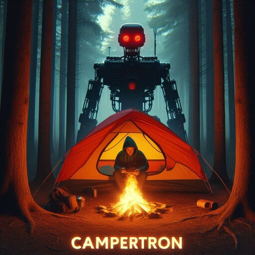
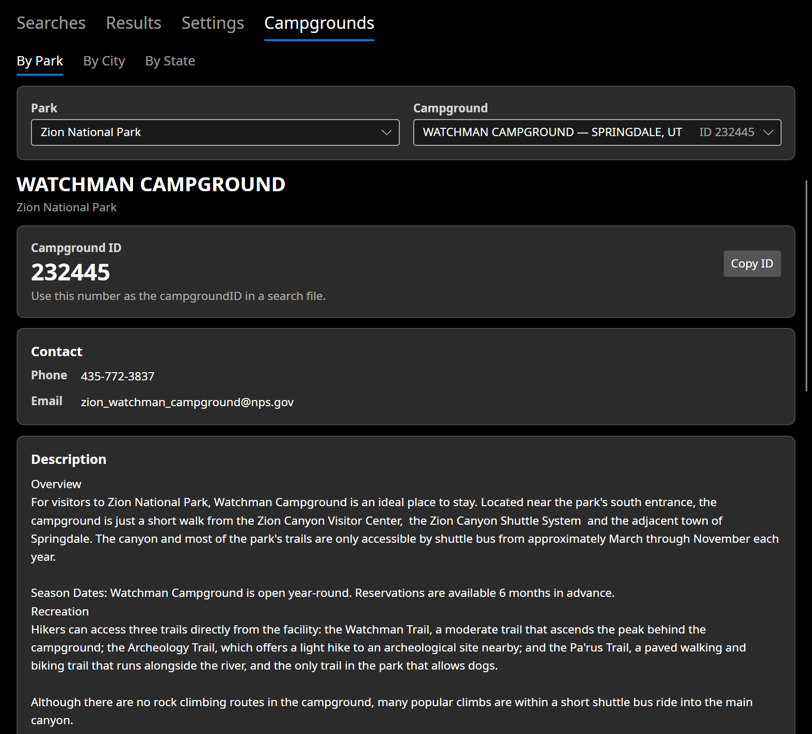
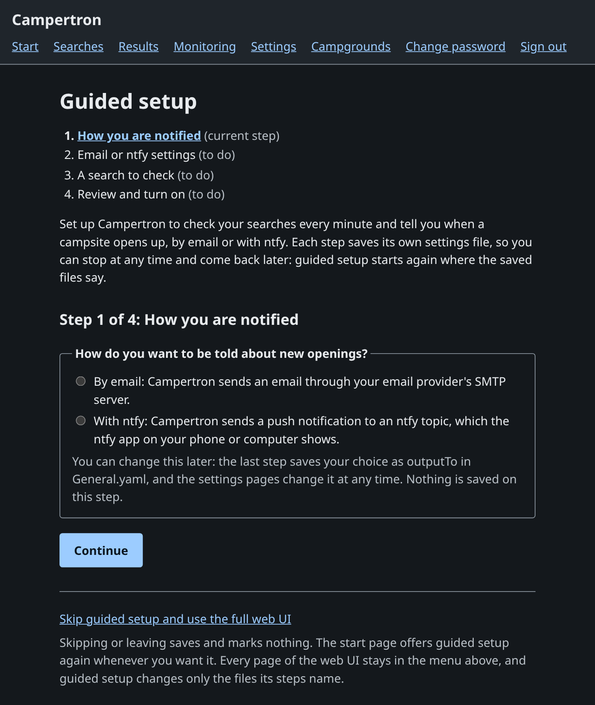
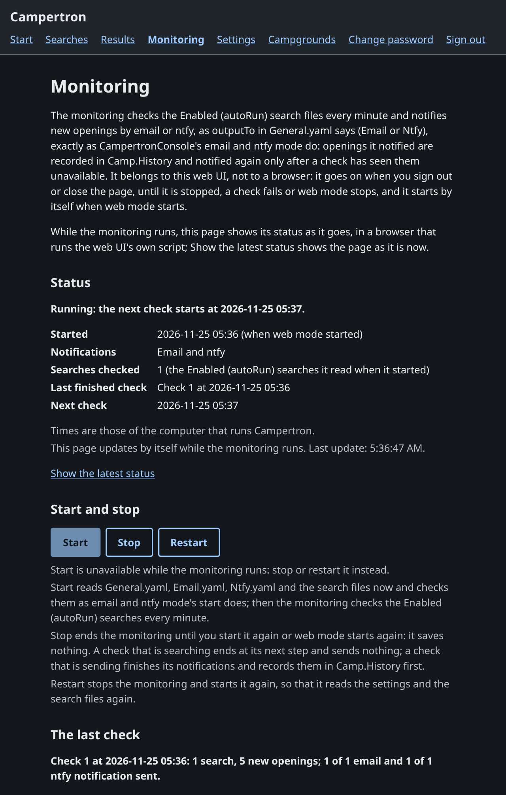
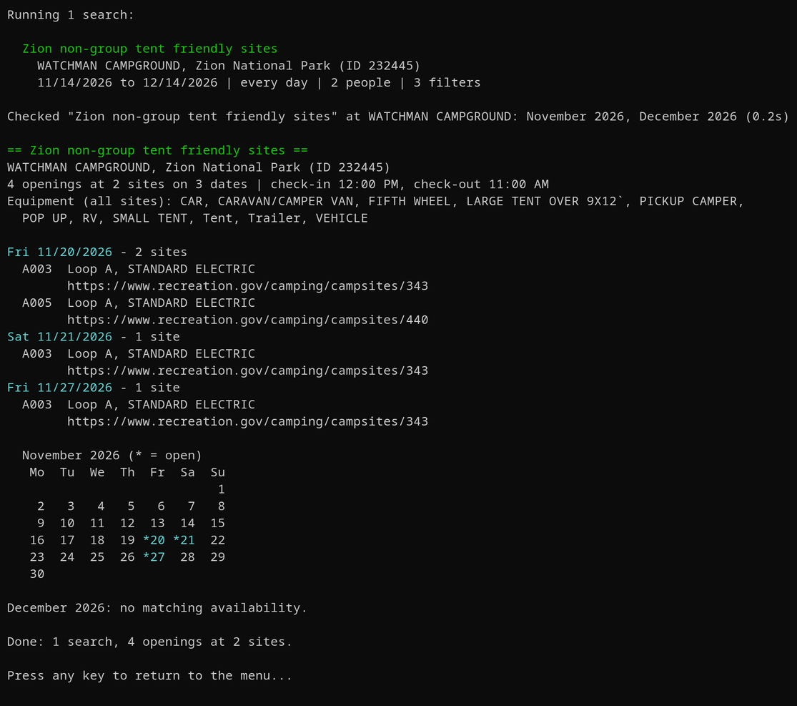

Campertron
Get notified when a campsite opens up on Recreation.gov.
Popular campgrounds are booked months ahead, but people cancel, and those openings are usually gone again within minutes. Campertron checks Recreation.gov for the campgrounds and dates you choose and tells you by email or with a push notification when a matching site is open.
Download Campertron See the source code on GitHub
Free, open source and self-hosted: it runs on your own computer or home server. For Windows, macOS and Linux, in your browser, or as a Docker container.

How it works
- Tell Campertron what you're looking for. Pick the campgrounds and the dates, and anything else that matters to you, such as your group size or a site for your tent.
- Campertron checks Recreation.gov for open sites that match: whenever you ask, or every minute while its monitoring runs.
- Hear about it, then book. Campertron shows you the open sites, or sends them to you by email or as a notification on your phone. Then you book the site on Recreation.gov yourself.
Ways to use it
All of them use the same settings and searches, so you can mix them.
The desktop app
CampertronGUI, for Windows, macOS and Linux. Create and edit your searches and settings, run your searches and see the open sites, and look up campgrounds. It follows your system's light or dark theme, or the one you choose, and makes use of the room of a wide or maximized window. It searches only when you ask; for notifications, use the web UI, the console or Docker.
The web UI
Start CampertronConsole with --web on a computer that stays on, then use Campertron in a browser on your home network. A guided setup takes you through email or ntfy and a first search. Then manage your searches and settings, run searches, start and stop the monitoring, look up campgrounds and refresh their data. The results, monitoring and system pages update by themselves while a search, the monitoring or a refresh runs, and you can choose the system, light or dark theme.
The console
CampertronConsole, in any terminal. Search now and see the open sites with a calendar of the open days, refresh the campground list and view your configuration. Set it to email or ntfy and it keeps watching instead.
Docker
The console as a container image for 64-bit Intel or AMD and ARM systems, for a home server or any machine that stays on. It keeps watching by default, or runs the web UI.
What it does
Find the right site
Search one campground or many at once. Narrow the results by dates, days of the week, group size, equipment such as a tent or a trailer, site features such as shade, site types, specific sites, and a minimum number of nights in a row.
Search now
Run your searches whenever you like and see every open site that matches right now, each with a link to book it on Recreation.gov.
Keep watching
The monitoring checks your enabled searches every minute and tells you about each new opening once. When a later check finds that night booked again and a check after that finds it open, you're told again. It sees only what its checks find: a site booked and freed between two checks looks as if it never closed.
Get notified by email or on your phone
Get the open sites in an email, as a push notification with ntfy, or both. The desktop app and the web UI send a test email or notification, and can pick a random ntfy topic for you.
Look up campgrounds
Find a campground's ID, phone number, description, directions and fees by park, city or state, and download the latest campground list from Recreation.gov when you want it.
Edit without the guesswork
Create and edit your searches and settings in the desktop app or the web UI, with each value checked as you go. They're plain files in one settings folder, so you can still edit them by hand.
Screenshots
The screenshots show the dark theme; the desktop app and the web UI also have a light one, or follow your system.





Self-hosted and private
Campertron runs on your own computer or server. There's no Campertron account or cloud service: it checks Recreation.gov from where you run it, sends your notifications through the email or ntfy server you choose, and keeps your settings in a folder on that computer.
The web UI is made for a home network you trust. It speaks plain HTTP, and its password doesn't encrypt the connection, so don't open it to the Internet or forward a port of your router to it. To reach it from elsewhere, put it behind an HTTPS reverse proxy that you run and set up yourself. The web UI guide explains how.
Get started
Desktop app and console
Open the latest release on GitHub, download the archive for your computer and extract it. Then start CampertronGUI, the desktop app, or CampertronConsole from that folder. You don't need to install anything else.
There are downloads for Windows, macOS and Linux, for Intel or AMD and for ARM processors. Which file do I need?
The programs aren't code-signed, so your computer may warn you the first time you start one. If your computer blocks the program explains what to do.
Web UI
Run CampertronConsole with --web from the same folder and open the address it shows. The first time, it writes a one-time setup code: enter it, choose a password, and the guided setup takes you from there. The web UI section of the guide has the details.
Docker
The console is also a container image for servers and home labs:
docker pull ghcr.io/shaunanthonyhathaway/campertronconsole:latest Run it with Docker shows how to set it up with your settings, with or without the web UI.
Set up your searches
The guide on GitHub explains how to set up your searches, choose where the results go, and get email or ntfy notifications.
Help and source code
- Read the guide: how to install, set up and use Campertron.
- Ask a question or report a problem on GitHub.
- See the source code on GitHub.
- MIT License: Campertron is free to use, change and share.
Please don't post your settings files, passwords, tokens, ntfy topics or setup codes when you ask for help. Questions and problems lists the details that help.